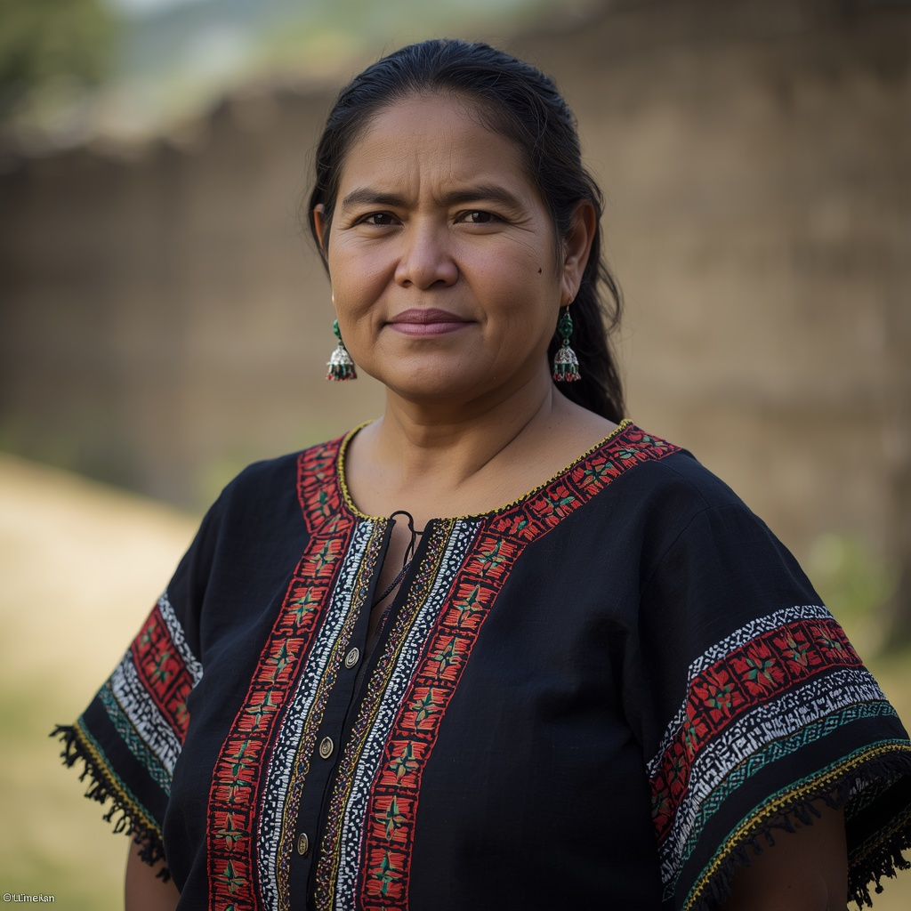

🧑🤝🧑 世界の民族・人びと
People of the World。国境を越えて暮らす人びとを、地域ごとに紹介します。伝統だけでなく、今の暮らしも一緒に。

マヤ人
🗣 使用言語
マヤ諸語（キチェ語、ユカテコ語、ケクチ語、カクチケル語など約30言語）、スペイン語
👥 人口の目安
約1,100万人以上（2022年時点、グアテマラとメキシコに最も多い）
👘 伝統衣装
女性は刺繍を施したブラウス「ウィピル」と長いスカートを伝統的に着用し、模様は村ごとに異なるため出身地の識別にも使われる。
🏠 住居
木の柱を4本立てて骨組みとし、壁は木や枝に泥を塗る「バハレケ（土壁）」、屋根はヤシの葉で葺いた楕円形の住居が伝統的で、暑い時期は涼しく寒い時期は暖かく保たれる工夫がされている。
🍲 食文化
トウモロコシを中心とした農業を営み、トルティーヤやタマレスなどトウモロコシ料理に加え、豆やカボチャ、唐辛子を組み合わせた食文化を持つ。
🎵 音楽・踊り
グアテマラのマヤ社会で発達した木琴「マリンバ」が代表的な楽器として知られ、15世紀に遡る舞踊劇「ラビナル・アチ」は2005年にユネスコの人類無形文化遺産に登録された。
🎉 行事・祭り
各村の守護聖人を祝う祭り（フィエスタ）がカトリックの暦とマヤの伝統が融合した形で行われ、舞踊劇「ラビナル・アチ」の上演もその一例である。
🙏 信仰・価値観
カトリックとマヤの伝統宗教が融合した独自の信仰形態を持ち、地方によっては地下世界と男性的な豊穣の力を司る聖人「マシモン」への信仰が見られる。近年は都市部を中心にプロテスタント（ペンテコステ派）の信者も増加している。
📜 歴史
古代マヤ文明は西暦250年頃から900年頃にかけて最盛期を迎え、天文学や暦法、文字体系で高度な発展を遂げたが900年頃に多くの都市が衰退した。1517年以降のスペインによる征服を経て、現在の中米各国に暮らすマヤ系住民の社会が形成された。
🏙 現代の暮らし
伝統的な言語や衣装を維持する共同体がある一方、都市部ではメスティーソ文化に同化した人々も多く、文化遺産を生かした観光業に携わるコミュニティも見られる。
🇯🇵 日本との関係
2023年に東京国立博物館で古代メキシコ文明を紹介する特別展「古代メキシコ―マヤ、アステカ、テオティワカン」が開催され（福岡・大阪にも巡回）、マヤの至宝が多数展示された。同年にはNHKでもマヤ文明を取り上げたドキュメンタリーが放送されている。
🌍 関連する国


出典: https://en.wikipedia.org/wiki/Maya_peoples(2026-09-01時点) / https://artexhibition.jp/topics/news/20230202-AEJ1225809/(2026-09-01時点)